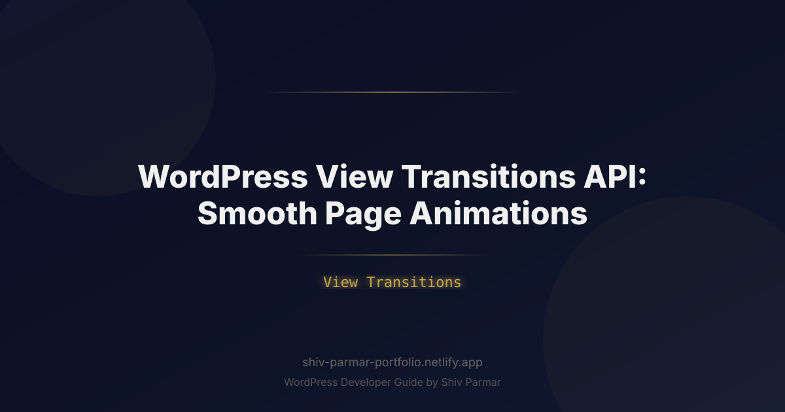

WordPress View Transitions API: Smooth Page | Shiv Parmar
Table of Contents
For more than two decades, the traditional web browsing experience has followed an abrupt, mechanical pattern: click a link, stare at an empty white viewport while the browser unloads the document, and watch elements jump aggressively into place as the new page renders. Native mobile applications long ago abandoned this jarring paradigm in favor of smooth, context-aware visual continuity. Web developers attempted to emulate this fluidity by converting standard websites into heavy Single Page Applications (SPAs)—often trading away SEO performance, caching simplicity, and baseline speed in exchange for visual polish.
The web platform has fundamentally evolved. With the native browser View Transitions API now extending to multi-page architectures, WordPress websites can deliver fluid, app-like page navigation without changing a single line of your database schema or abandoning the classic WordPress template hierarchy. By offloading rendering calculations to the browser's GPU and rendering pipeline, native cross-document transitions allow images to glide across views, headers to persist seamlessly, and content to fade gracefully between clicks.
Implementing modern animations in WordPress is no longer about chaining unwieldy JavaScript libraries like Barba.js or Turbolinks. Instead, it is about unlocking native browser standards to elevate site-wide UX. In this guide, we will unpack how the View Transitions API works within the WordPress ecosystem, explore its measurable impact on engagement and performance metrics, and walk through production-ready implementation strategies for block and classic themes alike.
What is the View Transitions API?
The View Transitions API is a browser specification that provides a native mechanism for creating animated transitions between different DOM states. Initially launched for same-document (single-page) architectures, the specification now natively supports cross-document transitions—often referred to as Multi-Page App (MPA) View Transitions. This cross-document support is precisely what makes the technology revolutionary for WordPress.
Traditionally, navigating from an archive listing (`archive.php` or `index.html`) to a single post (`single.php`) in WordPress triggers a hard document lifecycle: the old document is completely destroyed, assets are re-evaluated, and the new document paints from scratch. With cross-document View Transitions enabled, the browser intercepts this handoff by executing a precise, hardware-accelerated sequence:
- The user clicks a link pointing to a new page within the same origin.
- The browser captures a visual snapshot (a rasterized screenshot) of the outgoing page's current state.
- The incoming page is fetched over the network and parsed in the background.
- Before displaying the new page, the browser captures a snapshot of the incoming page.
- The browser constructs a temporary pseudo-element tree that sits on top of the document.
- Using standard CSS animations, the browser transitions between the old snapshots and the new live elements, morphing shared elements across coordinates.
This entire process happens on the browser rendering thread. Your WordPress backend continues outputting standard semantic HTML, serving cached assets, and executing zero client-side routing routines. The browser treats the navigation as a standard multi-page load for SEO, analytics, and security, but paints it as an unbroken, continuous visual thread for the user.
The Pseudo-Element Architecture Under the Hood
When a transition executes, the browser constructs a specialized, temporary pseudo-element hierarchy at the root level of the document. Understanding this structure is essential for writing custom transition CSS:
::view-transition
└── ::view-transition-group(root)
└── ::view-transition-image-pair(root)
├── ::view-transition-old(root)
└── ::view-transition-new(root)
Every element assigned a unique view-transition-name receives its own independent ::view-transition-group() branch. This isolates the element from the global page snapshot, allowing it to translate, scale, and cross-fade independently from the surrounding document flow.
Why View Transitions Matter for WordPress in 2026
The modern web landscape demands frictionless interactions. Users spend the majority of their digital time inside native mobile ecosystems (iOS and Android apps) where context-preserving animations guide focus, reinforce visual hierarchy, and signal state changes. When those same users navigate a typical WordPress site, the jarring "hard refresh" feels antiquated, driving up micro-frustrations and perceived load times.
Beyond aesthetics, adopting native view transitions provides critical architectural advantages for WordPress administrators and developers:
| Feature / Metric | Traditional WordPress Navigation | SPA Frameworks (Headless WordPress) | Native View Transitions API |
|---|---|---|---|
| JavaScript Overhead | Low (0–50 KB) | Extremely High (200–800+ KB) | Zero (Browser Native) |
| SEO & Crawlability | Native / Out of the Box | Requires SSR / Prerendering | Native / Out of the Box |
| Perceived Latency | High (White screen flash) | Low (Dynamic routing) | Extremely Low (Visual continuity) |
| Plugin Compatibility | 100% Core Native | Frequently Breaks Script Queues | 100% Core Native |
| Core Web Vitals Impact | Susceptible to Layout Shifts | High INP Risk Due to Scripting | Optimizes Perceived LCP & Lowers INP |
The View Transitions API directly optimizes UX by eliminating perceived latency. When an element—such as a featured blog thumbnail—seamlessly scales up into the hero header of the target post, the user’s cognitive focus remains locked on the content. The browser masks network loading time behind a purposeful, contextual animation.
Furthermore, because native transitions avoid the DOM replacement headaches common to PJAX or Barba.js setups, you do not need to re-initialize third-party analytics tags, re-bind event listeners for plugins like WooCommerce or Gravity Forms, or rebuild WordPress's internal asset dependency graph. It is the architectural compromise web developers have sought for over a decade: the operational simplicity of an MPA paired with the fluid presentation of an SPA.
Step-by-Step Guide: Implementing View Transitions in WordPress
Deploying native View Transitions to your WordPress theme requires a structured approach, progressing from a global opt-in rule to granular element tracking and robust accessibility safeguards.
Step 1: Enabling Cross-Document Transitions with CSS
The browser requires explicit consent from both the current document and the target document before running a cross-page transition. To provide this consent, you must declare the @view-transition at-rule inside your global stylesheet.
Add the following declaration to your theme’s main stylesheet (e.g., style.css in a child theme or your active custom block theme):
@view-transition {
navigation: auto;
}
Setting navigation: auto informs the browser that when a same-origin navigation occurs, it should capture the outgoing snapshot, request the target document, capture the incoming snapshot, and execute the default cross-fade transition. With this single rule, your entire WordPress site immediately abandons the blank-screen refresh and adopts a soft, browser-level cross-dissolve.
Step 2: Properly Enqueuing Styles via functions.php
To ensure your transitions load cleanly without render-blocking issues, enqueue your transition rules properly inside WordPress. Open your active theme’s functions.php file and register your styles using the standard hook:
<?php
/**
* Enqueue View Transitions styles.
*/
function wp_view_transitions_enqueue_scripts() {
wp_enqueue_style(
'wp-view-transitions-style',
get_theme_file_uri( '/assets/css/view-transitions.css' ),
array(),
wp_get_theme()->get( 'Version' )
);
}
add_action( 'wp_enqueue_scripts', 'wp_view_transitions_enqueue_scripts' );
If you prefer an inline approach to eliminate an extra HTTP request, you can inject the base rule directly into your document head:
<?php
/**
* Inject critical view transition rule into document head.
*/
function wp_view_transitions_inline_head() {
echo '<style id="view-transitions-core">@view-transition { navigation: auto; }</style>' . "\n";
}
add_action( 'wp_head', 'wp_view_transitions_inline_head', 1 );
Step 3: Creating Persistent Interface Elements
The default navigation: auto behavior dissolves the entire old page into the entire new page. While this is an improvement, true app-like UX occurs when UI components that do not change—such as your site header, primary navigation, or persistent search bar—remain static while only the content body shifts.
To lock an element in place, assign it an explicit, unique view-transition-name property in your CSS:
/* Preserve the Site Header */
.site-header,
header.wp-block-template-part {
view-transition-name: main-site-header;
}
/* Preserve the Primary Navigation */
.main-navigation,
nav.wp-block-navigation {
view-transition-name: primary-nav;
}
/* Preserve the Site Footer */
.site-footer,
footer.wp-block-template-part {
view-transition-name: main-site-footer;
}
Because the browser sees an identical view-transition-name on both the current and incoming pages, it extracts that element into its own layer. Rather than fading out and back in, the header stays pinned to the viewport, while the rest of the document transitions underneath it.
Step 4: Building Shared Element Transitions (Card to Single Post)
The most visually impressive application of the View Transitions API is the "shared element" pattern: animating a post card’s featured image on an archive page directly into the full-width hero image of the single post template.
The challenge in a dynamic CMS like WordPress is that view-transition-name values must be globally unique on any given page. If your archive page contains ten posts, you cannot assign view-transition-name: post-thumbnail; to all ten images, or the browser will discard the transition entirely due to name collisions.
To solve this, assign dynamic transition names based on the post ID. Here is how to achieve this using WordPress template tags or custom filters.
For Classic Themes (PHP Templates):
In your archive.php loop:
<article id="post-<?php the_ID(); ?>" <?php post_class( 'post-card' ); ?>>
<a href="<?php the_permalink(); ?>" class="post-card-image-link">
<?php
the_post_thumbnail( 'medium', array(
'style' => 'view-transition-name: post-img-' . get_the_ID() . ';',
'class' => 'archive-thumbnail'
) );
?>
</a>
<h2 class="entry-title" style="view-transition-name: post-title-<?php the_ID(); ?>;">
<a href="<?php the_permalink(); ?>"><?php the_title(); ?></a>
</h2>
</article>
In your single.php template:
<article id="post-<?php the_ID(); ?>" <?php post_class( 'single-post-wrapper' ); ?>>
<header class="post-header">
<h1 class="entry-title" style="view-transition-name: post-title-<?php the_ID(); ?>;">
<?php the_title(); ?>
</h1>
<?php
the_post_thumbnail( 'full', array(
'style' => 'view-transition-name: post-img-' . get_the_ID() . ';',
'class' => 'single-hero-thumbnail'
) );
?>
</header>
<div class="entry-content">
<?php the_content(); ?>
</div>
</article>
When the user clicks from the archive page to Post #42, the browser notes that post-img-42 exists on both documents. It automatically interpolates the width, height, border-radius, and screen coordinates, smoothly flying the card thumbnail into the hero header position.
For Block Themes (FSE):
If you are utilizing full site editing (FSE) block templates where you do not write raw PHP loops, you can use the render_block filter to dynamically inject transition names onto the Featured Image block:
<?php
/**
* Inject dynamic view-transition-name into core/post-featured-image blocks.
*/
function wp_add_view_transition_to_featured_image( $block_content, $block ) {
if ( 'core/post-featured-image' === $block['blockName'] ) {
$post_id = get_the_ID();
if ( ! $post_id ) {
return $block_content;
}
// Add inline style for transition name to the img element
$transition_style = 'style="view-transition-name: post-img-' . esc_attr( $post_id ) . ';"';
$block_content = str_replace( '<img ', '<img ' . $transition_style . ' ', $block_content );
}
return $block_content;
}
add_filter( 'render_block', 'wp_add_view_transition_to_featured_image', 10, 2 );
Step 5: Customizing Animation Timings and Easing Curves
The default browser transition uses a generic cross-dissolve lasting approximately 250 milliseconds. To deliver a signature design language, you can override the animation curves applied to the pseudo-element tree.
Here is an example that creates an intentional, high-end editorial feel using cubic-bezier timing and subtle vertical translations:
/* Define smooth easing variables */
:root {
--ease-out-expo: cubic-bezier(0.16, 1, 0.3, 1);
--duration-standard: 380ms;
}
/* Customize the old content leaving the viewport */
::view-transition-old(root) {
animation: fade-out 200ms ease-out both;
}
/* Customize the new content entering the viewport */
::view-transition-new(root) {
animation: slide-up var(--duration-standard) var(--ease-out-expo) both;
}
/* Keyframe animations */
@keyframes fade-out {
from {
opacity: 1;
}
to {
opacity: 0;
}
}
@keyframes slide-up {
from {
opacity: 0;
transform: translateY(18px);
}
to {
opacity: 1;
transform: translateY(0);
}
}
/* Smooth morphing for shared thumbnails */
::view-transition-group(*) {
animation-duration: var(--duration-standard);
animation-timing-function: var(--ease-out-expo);
}
Step 6: Progressive Enhancement and Fallback Handlers
While modern Chromium browsers and Apple WebKit (Safari 18+) provide native support for cross-document view transitions, older browsers and specific configurations will encounter stylesheets containing these properties without native capability. The fundamental beauty of CSS View Transitions is that they fail silently; unsupported browsers simply run standard, un-animated page loads.
However, if you want to execute conditional logic or load polyfills, you can feature-detect support in CSS and JavaScript:
In CSS:
@supports (view-transition-name: test) {
/* Advanced transition styling only applied if supported */
.site-main {
view-transition-name: content-area;
}
}
In JavaScript:
document.addEventListener('DOMContentLoaded', () => {
if (!('startViewTransition' in document)) {
// Fallback: Document does not support View Transitions
console.info('Native View Transitions are not supported in this browser.');
}
});
Best Practices for WordPress View Transitions
Implementing transition effects requires intentionality. Without careful technical governance, dynamic transitions can impair accessibility, degrade device battery life, or cause confusing visual jumps.
1. Respect Accessibility and Motion Sensitivities
The most important rule when configuring site-wide animations is honoring user preferences. Users suffering from vestibular disorders, motion sickness, or cognitive sensitivities often configure their operating system to reduce motion effects.
You must include a prefers-reduced-motion media query that completely strips out motion or replaces translations with immediate cuts or instantaneous cross-fades:
@media (prefers-reduced-motion: reduce) {
::view-transition-group(*),
::view-transition-old(*),
::view-transition-new(*) {
animation: none !important;
}
@view-transition {
navigation: none;
}
}
2. Maintain Strict Control Over Transition Durations
Transitions should inform, not delay. A common design pitfall is slowing down animations to show off visual assets. Long transitions (greater than 400ms) make the site feel sluggish, frustrating users who want to find information quickly.
- Standard cross-fades: 150ms to 250ms.
- Shared element morphs (card to page): 300ms to 380ms maximum.
- Timing functions: Always use an easing curve with a fast start and decelerating finish (such as
ease-outor customcubic-beziercurves) so elements react immediately to user input.
3. Manage Layer Containment and Aspect Ratios
When an element transitions between pages, the browser scales both its content and its bounding box. If an archive card displays a thumbnail in a 16:9 aspect ratio, but the single post displays it in a 21:9 banner ratio, the image may stretch unnaturally during the animation if not properly constrained.
Ensure that both the source and target elements utilize matching object-fit definitions to avoid distorting the rendered image:
.archive-thumbnail,
.single-hero-thumbnail {
object-fit: cover;
width: 100%;
height: auto;
}
To avoid clipping bugs, assign overflow: clip; or overflow: hidden; to containing elements, ensuring that during scale transformations, nested elements do not bleed outside their parent containers.
4. Keep the Logged-In Admin Bar Stable
For logged-in administrators and editors, the WordPress Admin Bar (#wpadminbar) sits pinned to the top of the viewport. If you apply a global page slide or fail to isolate the admin bar, the toolbar will flash, shift down, or cross-fade on every click.
Isolate the admin bar by assigning it an explicit transition name:
#wpadminbar {
view-transition-name: admin-bar;
}
This prevents the administrative controls from shifting or re-animating during internal editorial workflow testing.
Common Mistakes to Avoid
Because the View Transitions API operates at a low level in the browser rendering engine, minor configuration bugs can completely disable animations or trigger visual glitches.
1. Duplicate Transition Names
The single most frequent mistake in WordPress implementations is duplicating names. The browser specification mandates that a view-transition-name must be unique within both the active document and the incoming document.
If you mistakenly add static CSS like this:
/* INCORRECT: Will break if multiple cards exist on the page */
.post-card .post-thumbnail {
view-transition-name: featured-image;
}
When your archive page renders with twelve posts, twelve elements share the name featured-image. When a user clicks a link, the browser detects this name collision, discards the transition entirely, and falls back to an unstyled, instant page reload. Always bind unique identifiers (such as the database post ID or taxonomy slug) to dynamically generated elements.
2. Over-Animating Page Elements
It is tempting to assign transition names to the header, the logo, the navigation menu, the sidebar, the author bio box, the comments container, and the footer simultaneously. Running ten distinct transition groups forces the browser to compose and render multiple simultaneous bitmap textures on the GPU.
On low-power mobile hardware, this can cause frame drops, jank, and a degraded UX. Adhere to a minimalist philosophy: pin persistent layout boundaries (header/footer) and animate only one key contextual element (the primary image or headline).
3. Ignoring Cumulative Layout Shift (CLS) on Late-Loaded Ads and Scripts
View transitions take visual snapshots of the page exactly when the unload process begins. If your WordPress site loads dynamic client-side scripts—such as third-party display advertisements, newsletter popups, or chat widgets—that suddenly shift the page right as the transition activates, the outgoing snapshot will capture that layout shift.
Ensure that all structural layout dimensions are reserved using explicit CSS aspect-ratio or min-height declarations. Do not run heavy client-side DOM mutations in the milliseconds immediately following a link click.
4. Forgetting External Links and Cross-Origin Navigation
The View Transitions API for cross-document navigation strictly enforces the Same-Origin Policy. A link pointing to an external domain (or a different subdomain) cannot run a view transition. If you write custom JavaScript transition helpers, avoid applying loading states or link interception to external links, file downloads, or target="_blank" links.
You can safeguard your links using a standard CSS selector filter or simple JavaScript check:
// Example: Intercept only internal same-origin links if enhancing with JS
document.querySelectorAll('a').forEach(link => {
if (link.origin !== window.location.origin || link.target === '_blank') {
// Exclude from custom transition logic
return;
}
});
Conclusion
Integrating the View Transitions API into your WordPress site effectively bridges the gap between traditional multi-page architecture and the fluid feel of modern single-page applications. By replacing jarring browser reloads with seamless page animations, you can dramatically elevate your site's perceived speed and deliver a refined, modern UX that keeps users engaged.
While implementing these transition effects requires careful consideration around progressive enhancement and cross-browser fallbacks, the impact on user retention and brand perception is well worth the effort. Embracing these native browser capabilities ensures your WordPress platform stays ahead of design trends without sacrificing accessibility or performance.
Ready to modernize your WordPress site with seamless page transitions and high-performance design? Shiv Parmar is available for WordPress development work worldwide, helping businesses and agencies craft bespoke, high-converting digital experiences. Get in touch today to bring cutting-edge web capabilities to your next project.